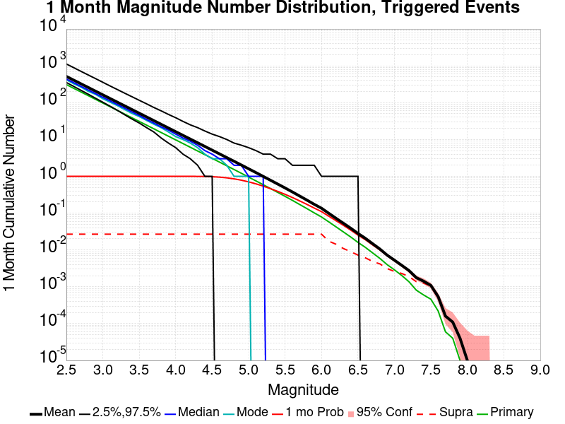
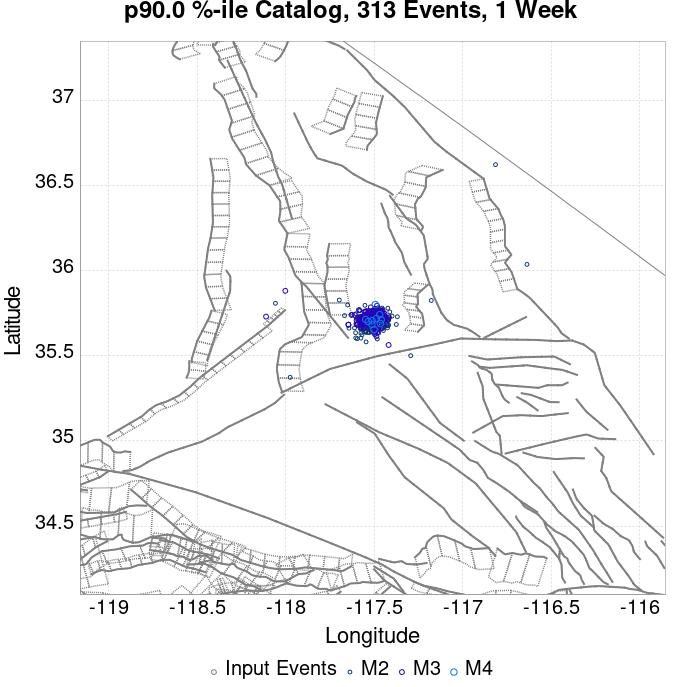
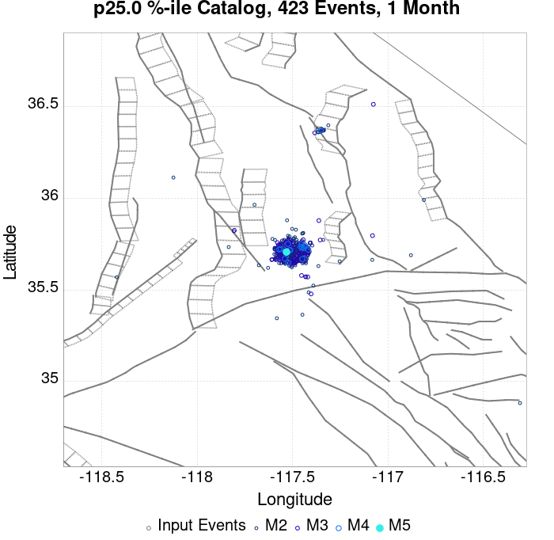
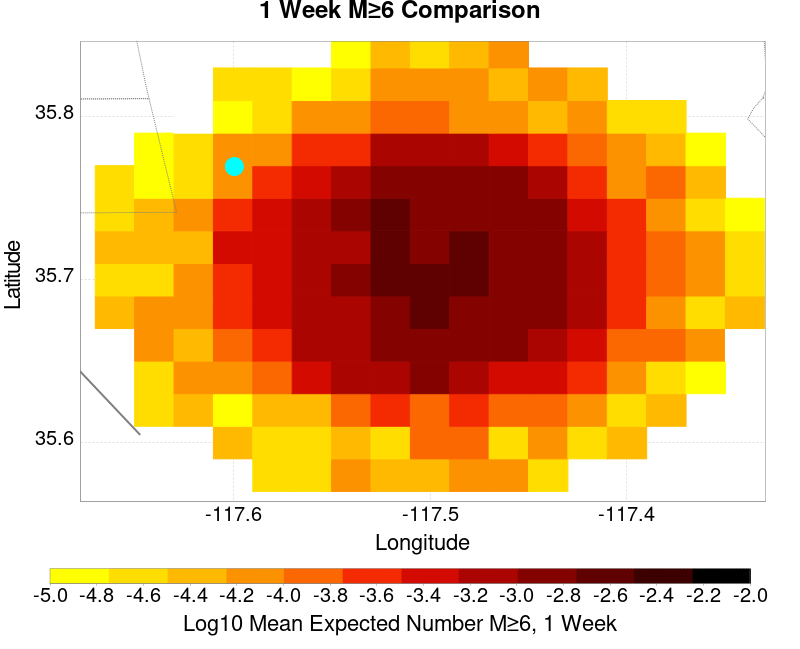
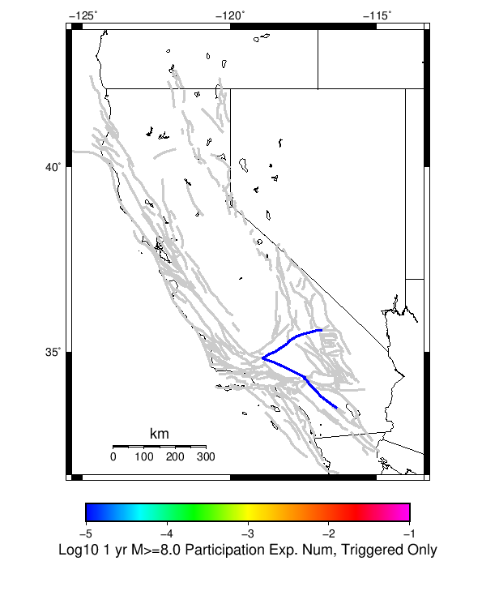

| ComCat M6.4 (ci38443183), Point Sources | |
|---|---|
| Num Simulations | 81886 (incomplete) |
| Start Time | 2019/07/04 17:33:50 UTC |
| Start Time Epoch Milliseconds | 1562261630000 |
| Duration | 10 Years |
| Includes Spontaneous? | false |
| Historical Ruptures | (none) |
| Magnitude | 1 Hour Prob | 1 Day Prob | 1 Week Prob | 1 Month Prob | 1 Year Prob | 10 Year Prob |
|---|---|---|---|---|---|---|
| M≥3 | 1.000 (100.00%) | 1.000 (100.00%) | 1.000 (100.00%) | 1.000 (100.00%) | 1.000 (100.00%) | 1.000 (100.00%) |
| M≥3.5 | 1.000 (99.99%) | 1.000 (100.00%) | 1.000 (100.00%) | 1.000 (100.00%) | 1.000 (100.00%) | 1.000 (100.00%) |
| M≥4 | 0.947 (94.71%) | 0.999 (99.91%) | 1.000 (99.99%) | 1.000 (100.00%) | 1.000 (100.00%) | 1.000 (100.00%) |
| M≥4.5 | 0.608 (60.77%) | 0.901 (90.09%) | 0.957 (95.73%) | 0.977 (97.67%) | 0.991 (99.09%) | 0.996 (99.59%) |
| M≥5 | 0.254 (25.43%) | 0.523 (52.33%) | 0.642 (64.17%) | 0.708 (70.82%) | 0.791 (79.15%) | 0.844 (84.45%) |
| M≥5.5 | 0.085 (8.45%) | 0.204 (20.41%) | 0.274 (27.45%) | 0.323 (32.29%) | 0.399 (39.87%) | 0.460 (45.99%) |
| M≥6 | 0.025 (2.46%) | 0.064 (6.37%) | 0.090 (8.96%) | 0.110 (10.95%) | 0.145 (14.45%) | 0.176 (17.60%) |
| M≥6.4 | 7.58E-3 (0.76%) | 0.019 (1.92%) | 0.028 (2.77%) | 0.034 (3.45%) | 0.048 (4.77%) | 0.060 (6.00%) |
| M≥6.5 | 5.39E-3 (0.54%) | 0.014 (1.38%) | 0.020 (1.98%) | 0.025 (2.49%) | 0.035 (3.47%) | 0.044 (4.43%) |
| M≥7 | 1.12E-3 (0.11%) | 2.72E-3 (0.27%) | 4.01E-3 (0.40%) | 5.12E-3 (0.51%) | 7.14E-3 (0.71%) | 9.50E-3 (0.95%) |
| M≥7.5 | 1.34E-4 (0.01%) | 4.52E-4 (0.05%) | 7.33E-4 (0.07%) | 1.07E-3 (0.11%) | 1.54E-3 (0.15%) | 2.23E-3 (0.22%) |
| M≥8 | 0.000 (0.00%) | 1.22E-5 (0.00%) | 1.22E-5 (0.00%) | 1.22E-5 (0.00%) | 1.22E-5 (0.00%) | 1.22E-5 (0.00%) |
Legend
| Mag | Mean | 2.5 %ile | 97.5 %ile | Median | Mode | 10 yr Probability | 10 yr Supra-Seis Prob | Primary Aftershocks Mean |
|---|---|---|---|---|---|---|---|---|
| M≥2.5 | 941.611 | 544.000 | 2673.000 | 721.000 | 641.000 | 1.000 (100.00%) | 0.052 (5.21%) | 419.139 |
| M≥2.6 | 747.951 | 429.000 | 2125.000 | 573.000 | 520.000 | 1.000 (100.00%) | 0.052 (5.21%) | 332.948 |
| M≥2.7 | 594.040 | 337.000 | 1686.000 | 456.000 | 396.000 | 1.000 (100.00%) | 0.052 (5.21%) | 264.440 |
| M≥2.8 | 471.872 | 265.000 | 1343.000 | 363.000 | 316.000 | 1.000 (100.00%) | 0.052 (5.21%) | 210.043 |
| M≥2.9 | 374.822 | 208.000 | 1066.000 | 288.000 | 253.000 | 1.000 (100.00%) | 0.052 (5.21%) | 166.825 |
| M≥3 | 297.709 | 163.000 | 848.000 | 230.000 | 205.000 | 1.000 (100.00%) | 0.052 (5.21%) | 132.495 |
| M≥3.1 | 236.527 | 127.000 | 675.000 | 183.000 | 164.000 | 1.000 (100.00%) | 0.052 (5.21%) | 105.276 |
| M≥3.2 | 187.859 | 99.000 | 536.000 | 145.000 | 133.000 | 1.000 (100.00%) | 0.052 (5.21%) | 83.600 |
| M≥3.3 | 149.219 | 76.000 | 426.000 | 116.000 | 103.000 | 1.000 (100.00%) | 0.052 (5.21%) | 66.404 |
| M≥3.4 | 118.521 | 59.000 | 339.000 | 92.000 | 78.000 | 1.000 (100.00%) | 0.052 (5.21%) | 52.737 |
| M≥3.5 | 94.145 | 45.000 | 271.000 | 73.000 | 62.000 | 1.000 (100.00%) | 0.052 (5.21%) | 41.869 |
| M≥3.6 | 74.755 | 35.000 | 215.000 | 58.000 | 52.000 | 1.000 (100.00%) | 0.052 (5.21%) | 33.254 |
| M≥3.7 | 59.383 | 26.000 | 172.000 | 46.000 | 40.000 | 1.000 (100.00%) | 0.052 (5.21%) | 26.418 |
| M≥3.8 | 47.157 | 20.000 | 137.000 | 37.000 | 34.000 | 1.000 (100.00%) | 0.052 (5.21%) | 20.984 |
| M≥3.9 | 37.438 | 15.000 | 109.000 | 29.000 | 25.000 | 1.000 (100.00%) | 0.052 (5.21%) | 16.661 |
| M≥4 | 29.736 | 11.000 | 88.000 | 23.000 | 20.000 | 1.000 (100.00%) | 0.052 (5.21%) | 13.232 |
| M≥4.1 | 23.602 | 8.000 | 70.000 | 18.000 | 15.000 | 1.000 (100.00%) | 0.052 (5.21%) | 10.502 |
| M≥4.2 | 18.743 | 6.000 | 57.000 | 15.000 | 12.000 | 1.000 (99.99%) | 0.052 (5.21%) | 8.335 |
| M≥4.3 | 14.874 | 4.000 | 46.000 | 12.000 | 10.000 | 1.000 (99.98%) | 0.052 (5.21%) | 6.617 |
| M≥4.4 | 11.792 | 3.000 | 37.000 | 9.000 | 7.000 | 0.999 (99.89%) | 0.052 (5.21%) | 5.249 |
| M≥4.5 | 9.353 | 2.000 | 30.000 | 7.000 | 6.000 | 0.996 (99.59%) | 0.052 (5.21%) | 4.161 |
| M≥4.6 | 7.420 | 1.000 | 24.000 | 6.000 | 4.000 | 0.988 (98.79%) | 0.052 (5.21%) | 3.300 |
| M≥4.7 | 5.887 | 0.000 | 20.000 | 4.000 | 3.000 | 0.971 (97.15%) | 0.052 (5.21%) | 2.615 |
| M≥4.8 | 4.673 | 0.000 | 16.000 | 3.000 | 2.000 | 0.943 (94.29%) | 0.052 (5.21%) | 2.073 |
| M≥4.9 | 3.701 | 0.000 | 14.000 | 3.000 | 2.000 | 0.901 (90.06%) | 0.052 (5.21%) | 1.641 |
| M≥5 | 2.927 | 0.000 | 11.000 | 2.000 | 1.000 | 0.844 (84.45%) | 0.052 (5.21%) | 1.295 |
| M≥5.1 | 2.312 | 0.000 | 9.000 | 2.000 | 1.000 | 0.775 (77.51%) | 0.052 (5.21%) | 1.023 |
| M≥5.2 | 1.825 | 0.000 | 8.000 | 1.000 | 0.000 | 0.699 (69.85%) | 0.052 (5.21%) | 0.806 |
| M≥5.3 | 1.436 | 0.000 | 7.000 | 1.000 | 0.000 | 0.617 (61.72%) | 0.052 (5.21%) | 0.633 |
| M≥5.4 | 1.130 | 0.000 | 6.000 | 1.000 | 0.000 | 0.537 (53.66%) | 0.052 (5.21%) | 0.496 |
| M≥5.5 | 0.888 | 0.000 | 5.000 | 0.000 | 0.000 | 0.460 (45.99%) | 0.052 (5.21%) | 0.388 |
| M≥5.6 | 0.695 | 0.000 | 4.000 | 0.000 | 0.000 | 0.388 (38.85%) | 0.052 (5.21%) | 0.303 |
| M≥5.7 | 0.541 | 0.000 | 3.000 | 0.000 | 0.000 | 0.323 (32.29%) | 0.052 (5.21%) | 0.234 |
| M≥5.8 | 0.419 | 0.000 | 3.000 | 0.000 | 0.000 | 0.265 (26.50%) | 0.052 (5.21%) | 0.180 |
| M≥5.9 | 0.324 | 0.000 | 2.000 | 0.000 | 0.000 | 0.215 (21.49%) | 0.052 (5.20%) | 0.138 |
| M≥6 | 0.255 | 0.000 | 2.000 | 0.000 | 0.000 | 0.176 (17.60%) | 0.052 (5.20%) | 0.106 |
| M≥6.1 | 0.184 | 0.000 | 2.000 | 0.000 | 0.000 | 0.134 (13.44%) | 0.034 (3.43%) | 0.078 |
| M≥6.2 | 0.134 | 0.000 | 1.000 | 0.000 | 0.000 | 0.103 (10.29%) | 0.028 (2.84%) | 0.057 |
| M≥6.3 | 0.099 | 0.000 | 1.000 | 0.000 | 0.000 | 0.079 (7.87%) | 0.022 (2.21%) | 0.042 |
| M≥6.4 | 0.073 | 0.000 | 1.000 | 0.000 | 0.000 | 0.060 (6.00%) | 0.018 (1.84%) | 0.031 |
| M≥6.5 | 0.053 | 0.000 | 1.000 | 0.000 | 0.000 | 0.044 (4.43%) | 0.015 (1.45%) | 0.022 |
| M≥6.6 | 0.039 | 0.000 | 1.000 | 0.000 | 0.000 | 0.034 (3.36%) | 0.012 (1.24%) | 0.016 |
| M≥6.7 | 0.028 | 0.000 | 0.000 | 0.000 | 0.000 | 0.025 (2.47%) | 9.82E-3 (0.98%) | 0.011 |
| M≥6.8 | 0.020 | 0.000 | 0.000 | 0.000 | 0.000 | 0.018 (1.84%) | 8.35E-3 (0.84%) | 8.05E-3 |
| M≥6.9 | 0.014 | 0.000 | 0.000 | 0.000 | 0.000 | 0.013 (1.28%) | 6.22E-3 (0.62%) | 5.29E-3 |
| M≥7 | 9.90E-3 | 0.000 | 0.000 | 0.000 | 0.000 | 9.50E-3 (0.95%) | 5.24E-3 (0.52%) | 3.80E-3 |
| M≥7.1 | 7.47E-3 | 0.000 | 0.000 | 0.000 | 0.000 | 7.24E-3 (0.72%) | 4.65E-3 (0.47%) | 2.70E-3 |
| M≥7.2 | 5.54E-3 | 0.000 | 0.000 | 0.000 | 0.000 | 5.35E-3 (0.53%) | 3.85E-3 (0.38%) | 1.80E-3 |
| M≥7.3 | 3.68E-3 | 0.000 | 0.000 | 0.000 | 0.000 | 3.59E-3 (0.36%) | 2.87E-3 (0.29%) | 1.11E-3 |
| M≥7.4 | 2.97E-3 | 0.000 | 0.000 | 0.000 | 0.000 | 2.92E-3 (0.29%) | 2.65E-3 (0.27%) | 7.82E-4 |
| M≥7.5 | 2.26E-3 | 0.000 | 0.000 | 0.000 | 0.000 | 2.23E-3 (0.22%) | 2.16E-3 (0.22%) | 5.25E-4 |
| M≥7.6 | 1.01E-3 | 0.000 | 0.000 | 0.000 | 0.000 | 1.00E-3 (0.10%) | 9.77E-4 (0.10%) | 2.44E-4 |
| M≥7.7 | 3.42E-4 | 0.000 | 0.000 | 0.000 | 0.000 | 3.42E-4 (0.03%) | 3.42E-4 (0.03%) | 7.33E-5 |
| M≥7.8 | 1.71E-4 | 0.000 | 0.000 | 0.000 | 0.000 | 1.71E-4 (0.02%) | 1.71E-4 (0.02%) | 3.66E-5 |
| M≥7.9 | 6.11E-5 | 0.000 | 0.000 | 0.000 | 0.000 | 6.11E-5 (0.01%) | 6.11E-5 (0.01%) | 1.22E-5 |
| M≥8 | 1.22E-5 | 0.000 | 0.000 | 0.000 | 0.000 | 1.22E-5 (0.00%) | 1.22E-5 (0.00%) | 0.000 |
| M≥8.1 | 0.000 | 0.000 | 0.000 | 0.000 | 0.000 | 0.000 (0.00%) | 0.000 (0.00%) | 0.000 |
| M≥8.2 | 0.000 | 0.000 | 0.000 | 0.000 | 0.000 | 0.000 (0.00%) | 0.000 (0.00%) | 0.000 |
| M≥8.3 | 0.000 | 0.000 | 0.000 | 0.000 | 0.000 | 0.000 (0.00%) | 0.000 (0.00%) | 0.000 |
| M≥8.4 | 0.000 | 0.000 | 0.000 | 0.000 | 0.000 | 0.000 (0.00%) | 0.000 (0.00%) | 0.000 |
| M≥8.5 | 0.000 | 0.000 | 0.000 | 0.000 | 0.000 | 0.000 (0.00%) | 0.000 (0.00%) | 0.000 |
| M≥8.6 | 0.000 | 0.000 | 0.000 | 0.000 | 0.000 | 0.000 (0.00%) | 0.000 (0.00%) | 0.000 |
| M≥8.7 | 0.000 | 0.000 | 0.000 | 0.000 | 0.000 | 0.000 (0.00%) | 0.000 (0.00%) | 0.000 |
| M≥8.8 | 0.000 | 0.000 | 0.000 | 0.000 | 0.000 | 0.000 (0.00%) | 0.000 (0.00%) | 0.000 |
| M≥8.9 | 0.000 | 0.000 | 0.000 | 0.000 | 0.000 | 0.000 (0.00%) | 0.000 (0.00%) | 0.000 |
| M≥9 | 0.000 | 0.000 | 0.000 | 0.000 | 0.000 | 0.000 (0.00%) | 0.000 (0.00%) | 0.000 |
Legend

| Mag | Mean | 2.5 %ile | 97.5 %ile | Median | Mode | 1 yr Probability | 1 yr Supra-Seis Prob | Primary Aftershocks Mean |
|---|---|---|---|---|---|---|---|---|
| M≥2.5 | 722.215 | 454.000 | 1822.000 | 584.000 | 540.000 | 1.000 (100.00%) | 0.039 (3.90%) | 371.087 |
| M≥2.6 | 573.696 | 358.000 | 1445.000 | 464.000 | 423.000 | 1.000 (100.00%) | 0.039 (3.90%) | 294.786 |
| M≥2.7 | 455.645 | 281.000 | 1150.000 | 369.000 | 338.000 | 1.000 (100.00%) | 0.039 (3.90%) | 234.134 |
| M≥2.8 | 361.938 | 221.000 | 913.000 | 294.000 | 271.000 | 1.000 (100.00%) | 0.039 (3.90%) | 185.977 |
| M≥2.9 | 287.498 | 173.000 | 726.000 | 234.000 | 217.000 | 1.000 (100.00%) | 0.039 (3.90%) | 147.695 |
| M≥3 | 228.384 | 135.000 | 576.000 | 186.000 | 166.000 | 1.000 (100.00%) | 0.039 (3.90%) | 117.312 |
| M≥3.1 | 181.472 | 105.000 | 460.000 | 148.000 | 138.000 | 1.000 (100.00%) | 0.039 (3.90%) | 93.220 |
| M≥3.2 | 144.121 | 81.000 | 367.000 | 118.000 | 103.000 | 1.000 (100.00%) | 0.039 (3.90%) | 74.023 |
| M≥3.3 | 114.484 | 63.000 | 292.000 | 94.000 | 84.000 | 1.000 (100.00%) | 0.039 (3.90%) | 58.801 |
| M≥3.4 | 90.937 | 48.000 | 233.000 | 75.000 | 67.000 | 1.000 (100.00%) | 0.039 (3.90%) | 46.700 |
| M≥3.5 | 72.226 | 37.000 | 185.000 | 59.000 | 53.000 | 1.000 (100.00%) | 0.039 (3.90%) | 37.074 |
| M≥3.6 | 57.349 | 28.000 | 147.000 | 47.000 | 42.000 | 1.000 (100.00%) | 0.039 (3.90%) | 29.445 |
| M≥3.7 | 45.549 | 21.000 | 118.000 | 38.000 | 35.000 | 1.000 (100.00%) | 0.039 (3.90%) | 23.388 |
| M≥3.8 | 36.180 | 16.000 | 94.000 | 30.000 | 28.000 | 1.000 (100.00%) | 0.039 (3.90%) | 18.582 |
| M≥3.9 | 28.722 | 12.000 | 75.000 | 24.000 | 20.000 | 1.000 (100.00%) | 0.039 (3.90%) | 14.755 |
| M≥4 | 22.816 | 8.000 | 60.000 | 19.000 | 17.000 | 1.000 (100.00%) | 0.039 (3.90%) | 11.720 |
| M≥4.1 | 18.108 | 6.000 | 49.000 | 15.000 | 13.000 | 1.000 (100.00%) | 0.039 (3.90%) | 9.301 |
| M≥4.2 | 14.378 | 4.000 | 39.000 | 12.000 | 10.000 | 1.000 (99.99%) | 0.039 (3.90%) | 7.382 |
| M≥4.3 | 11.415 | 3.000 | 32.000 | 9.000 | 8.000 | 0.999 (99.92%) | 0.039 (3.90%) | 5.861 |
| M≥4.4 | 9.049 | 2.000 | 26.000 | 7.000 | 6.000 | 0.997 (99.69%) | 0.039 (3.90%) | 4.650 |
| M≥4.5 | 7.178 | 1.000 | 21.000 | 6.000 | 5.000 | 0.991 (99.09%) | 0.039 (3.90%) | 3.687 |
| M≥4.6 | 5.693 | 1.000 | 17.000 | 5.000 | 3.000 | 0.977 (97.68%) | 0.039 (3.90%) | 2.923 |
| M≥4.7 | 4.517 | 0.000 | 14.000 | 4.000 | 3.000 | 0.951 (95.14%) | 0.039 (3.90%) | 2.316 |
| M≥4.8 | 3.583 | 0.000 | 12.000 | 3.000 | 2.000 | 0.912 (91.22%) | 0.039 (3.90%) | 1.837 |
| M≥4.9 | 2.836 | 0.000 | 10.000 | 2.000 | 1.000 | 0.858 (85.81%) | 0.039 (3.90%) | 1.453 |
| M≥5 | 2.241 | 0.000 | 8.000 | 2.000 | 1.000 | 0.791 (79.15%) | 0.039 (3.90%) | 1.146 |
| M≥5.1 | 1.770 | 0.000 | 7.000 | 1.000 | 1.000 | 0.714 (71.43%) | 0.039 (3.90%) | 0.905 |
| M≥5.2 | 1.396 | 0.000 | 6.000 | 1.000 | 0.000 | 0.633 (63.33%) | 0.039 (3.90%) | 0.713 |
| M≥5.3 | 1.098 | 0.000 | 5.000 | 1.000 | 0.000 | 0.551 (55.07%) | 0.039 (3.90%) | 0.560 |
| M≥5.4 | 0.863 | 0.000 | 4.000 | 0.000 | 0.000 | 0.471 (47.14%) | 0.039 (3.90%) | 0.438 |
| M≥5.5 | 0.678 | 0.000 | 4.000 | 0.000 | 0.000 | 0.399 (39.87%) | 0.039 (3.90%) | 0.343 |
| M≥5.6 | 0.530 | 0.000 | 3.000 | 0.000 | 0.000 | 0.333 (33.32%) | 0.039 (3.90%) | 0.268 |
| M≥5.7 | 0.411 | 0.000 | 3.000 | 0.000 | 0.000 | 0.273 (27.33%) | 0.039 (3.90%) | 0.206 |
| M≥5.8 | 0.318 | 0.000 | 2.000 | 0.000 | 0.000 | 0.222 (22.16%) | 0.039 (3.89%) | 0.159 |
| M≥5.9 | 0.245 | 0.000 | 2.000 | 0.000 | 0.000 | 0.178 (17.81%) | 0.039 (3.89%) | 0.122 |
| M≥6 | 0.193 | 0.000 | 2.000 | 0.000 | 0.000 | 0.145 (14.45%) | 0.039 (3.89%) | 0.094 |
| M≥6.1 | 0.139 | 0.000 | 1.000 | 0.000 | 0.000 | 0.109 (10.92%) | 0.025 (2.55%) | 0.070 |
| M≥6.2 | 0.101 | 0.000 | 1.000 | 0.000 | 0.000 | 0.083 (8.30%) | 0.021 (2.09%) | 0.051 |
| M≥6.3 | 0.075 | 0.000 | 1.000 | 0.000 | 0.000 | 0.063 (6.31%) | 0.016 (1.63%) | 0.038 |
| M≥6.4 | 0.055 | 0.000 | 1.000 | 0.000 | 0.000 | 0.048 (4.77%) | 0.013 (1.34%) | 0.027 |
| M≥6.5 | 0.040 | 0.000 | 1.000 | 0.000 | 0.000 | 0.035 (3.47%) | 0.011 (1.06%) | 0.019 |
| M≥6.6 | 0.029 | 0.000 | 1.000 | 0.000 | 0.000 | 0.026 (2.60%) | 9.00E-3 (0.90%) | 0.014 |
| M≥6.7 | 0.021 | 0.000 | 0.000 | 0.000 | 0.000 | 0.019 (1.89%) | 7.00E-3 (0.70%) | 0.010 |
| M≥6.8 | 0.015 | 0.000 | 0.000 | 0.000 | 0.000 | 0.014 (1.39%) | 5.87E-3 (0.59%) | 7.12E-3 |
| M≥6.9 | 0.010 | 0.000 | 0.000 | 0.000 | 0.000 | 9.66E-3 (0.97%) | 4.41E-3 (0.44%) | 4.75E-3 |
| M≥7 | 7.42E-3 | 0.000 | 0.000 | 0.000 | 0.000 | 7.14E-3 (0.71%) | 3.69E-3 (0.37%) | 3.48E-3 |
| M≥7.1 | 5.45E-3 | 0.000 | 0.000 | 0.000 | 0.000 | 5.28E-3 (0.53%) | 3.22E-3 (0.32%) | 2.47E-3 |
| M≥7.2 | 3.97E-3 | 0.000 | 0.000 | 0.000 | 0.000 | 3.82E-3 (0.38%) | 2.66E-3 (0.27%) | 1.64E-3 |
| M≥7.3 | 2.67E-3 | 0.000 | 0.000 | 0.000 | 0.000 | 2.60E-3 (0.26%) | 1.98E-3 (0.20%) | 9.77E-4 |
| M≥7.4 | 2.08E-3 | 0.000 | 0.000 | 0.000 | 0.000 | 2.04E-3 (0.20%) | 1.82E-3 (0.18%) | 6.72E-4 |
| M≥7.5 | 1.55E-3 | 0.000 | 0.000 | 0.000 | 0.000 | 1.54E-3 (0.15%) | 1.48E-3 (0.15%) | 4.64E-4 |
| M≥7.6 | 7.21E-4 | 0.000 | 0.000 | 0.000 | 0.000 | 7.08E-4 (0.07%) | 6.84E-4 (0.07%) | 2.08E-4 |
| M≥7.7 | 2.32E-4 | 0.000 | 0.000 | 0.000 | 0.000 | 2.32E-4 (0.02%) | 2.32E-4 (0.02%) | 7.33E-5 |
| M≥7.8 | 1.34E-4 | 0.000 | 0.000 | 0.000 | 0.000 | 1.34E-4 (0.01%) | 1.34E-4 (0.01%) | 3.66E-5 |
| M≥7.9 | 6.11E-5 | 0.000 | 0.000 | 0.000 | 0.000 | 6.11E-5 (0.01%) | 6.11E-5 (0.01%) | 1.22E-5 |
| M≥8 | 1.22E-5 | 0.000 | 0.000 | 0.000 | 0.000 | 1.22E-5 (0.00%) | 1.22E-5 (0.00%) | 0.000 |
| M≥8.1 | 0.000 | 0.000 | 0.000 | 0.000 | 0.000 | 0.000 (0.00%) | 0.000 (0.00%) | 0.000 |
| M≥8.2 | 0.000 | 0.000 | 0.000 | 0.000 | 0.000 | 0.000 (0.00%) | 0.000 (0.00%) | 0.000 |
| M≥8.3 | 0.000 | 0.000 | 0.000 | 0.000 | 0.000 | 0.000 (0.00%) | 0.000 (0.00%) | 0.000 |
| M≥8.4 | 0.000 | 0.000 | 0.000 | 0.000 | 0.000 | 0.000 (0.00%) | 0.000 (0.00%) | 0.000 |
| M≥8.5 | 0.000 | 0.000 | 0.000 | 0.000 | 0.000 | 0.000 (0.00%) | 0.000 (0.00%) | 0.000 |
| M≥8.6 | 0.000 | 0.000 | 0.000 | 0.000 | 0.000 | 0.000 (0.00%) | 0.000 (0.00%) | 0.000 |
| M≥8.7 | 0.000 | 0.000 | 0.000 | 0.000 | 0.000 | 0.000 (0.00%) | 0.000 (0.00%) | 0.000 |
| M≥8.8 | 0.000 | 0.000 | 0.000 | 0.000 | 0.000 | 0.000 (0.00%) | 0.000 (0.00%) | 0.000 |
| M≥8.9 | 0.000 | 0.000 | 0.000 | 0.000 | 0.000 | 0.000 (0.00%) | 0.000 (0.00%) | 0.000 |
| M≥9 | 0.000 | 0.000 | 0.000 | 0.000 | 0.000 | 0.000 (0.00%) | 0.000 (0.00%) | 0.000 |
Legend

| Mag | Mean | 2.5 %ile | 97.5 %ile | Median | Mode | 1 mo Probability | 1 mo Supra-Seis Prob | Primary Aftershocks Mean |
|---|---|---|---|---|---|---|---|---|
| M≥2.5 | 515.628 | 353.000 | 1119.000 | 439.000 | 419.000 | 1.000 (100.00%) | 0.027 (2.66%) | 309.407 |
| M≥2.6 | 409.606 | 277.000 | 890.000 | 350.000 | 323.000 | 1.000 (100.00%) | 0.027 (2.66%) | 245.810 |
| M≥2.7 | 325.308 | 217.000 | 709.000 | 278.000 | 265.000 | 1.000 (100.00%) | 0.027 (2.66%) | 195.240 |
| M≥2.8 | 258.436 | 170.000 | 564.000 | 221.000 | 203.000 | 1.000 (100.00%) | 0.027 (2.66%) | 155.093 |
| M≥2.9 | 205.273 | 132.000 | 448.000 | 176.000 | 163.000 | 1.000 (100.00%) | 0.027 (2.66%) | 123.166 |
| M≥3 | 163.060 | 103.000 | 356.000 | 140.000 | 133.000 | 1.000 (100.00%) | 0.027 (2.66%) | 97.826 |
| M≥3.1 | 129.564 | 80.000 | 284.000 | 112.000 | 103.000 | 1.000 (100.00%) | 0.027 (2.66%) | 77.741 |
| M≥3.2 | 102.887 | 62.000 | 226.000 | 89.000 | 83.000 | 1.000 (100.00%) | 0.027 (2.66%) | 61.727 |
| M≥3.3 | 81.716 | 47.000 | 180.000 | 71.000 | 67.000 | 1.000 (100.00%) | 0.027 (2.66%) | 49.026 |
| M≥3.4 | 64.907 | 36.000 | 144.000 | 56.000 | 53.000 | 1.000 (100.00%) | 0.027 (2.66%) | 38.934 |
| M≥3.5 | 51.546 | 27.000 | 115.000 | 45.000 | 42.000 | 1.000 (100.00%) | 0.027 (2.66%) | 30.911 |
| M≥3.6 | 40.929 | 21.000 | 92.000 | 35.000 | 31.000 | 1.000 (100.00%) | 0.027 (2.66%) | 24.553 |
| M≥3.7 | 32.514 | 16.000 | 74.000 | 28.000 | 26.000 | 1.000 (100.00%) | 0.027 (2.66%) | 19.503 |
| M≥3.8 | 25.827 | 11.000 | 59.000 | 22.000 | 21.000 | 1.000 (100.00%) | 0.027 (2.66%) | 15.493 |
| M≥3.9 | 20.500 | 8.000 | 48.000 | 18.000 | 16.000 | 1.000 (100.00%) | 0.027 (2.66%) | 12.300 |
| M≥4 | 16.280 | 6.000 | 38.000 | 14.000 | 12.000 | 1.000 (100.00%) | 0.027 (2.66%) | 9.769 |
| M≥4.1 | 12.924 | 4.000 | 31.000 | 11.000 | 10.000 | 1.000 (99.99%) | 0.027 (2.66%) | 7.753 |
| M≥4.2 | 10.262 | 3.000 | 25.000 | 9.000 | 8.000 | 0.999 (99.92%) | 0.027 (2.66%) | 6.153 |
| M≥4.3 | 8.152 | 2.000 | 21.000 | 7.000 | 6.000 | 0.997 (99.69%) | 0.027 (2.66%) | 4.886 |
| M≥4.4 | 6.465 | 1.000 | 17.000 | 5.000 | 5.000 | 0.991 (99.06%) | 0.027 (2.66%) | 3.876 |
| M≥4.5 | 5.127 | 1.000 | 14.000 | 4.000 | 3.000 | 0.977 (97.67%) | 0.027 (2.66%) | 3.074 |
| M≥4.6 | 4.068 | 0.000 | 12.000 | 3.000 | 3.000 | 0.951 (95.06%) | 0.027 (2.66%) | 2.437 |
| M≥4.7 | 3.227 | 0.000 | 10.000 | 3.000 | 2.000 | 0.909 (90.95%) | 0.027 (2.66%) | 1.932 |
| M≥4.8 | 2.560 | 0.000 | 8.000 | 2.000 | 1.000 | 0.854 (85.39%) | 0.027 (2.66%) | 1.532 |
| M≥4.9 | 2.026 | 0.000 | 7.000 | 2.000 | 1.000 | 0.786 (78.55%) | 0.027 (2.66%) | 1.211 |
| M≥5 | 1.599 | 0.000 | 6.000 | 1.000 | 1.000 | 0.708 (70.82%) | 0.027 (2.66%) | 0.955 |
| M≥5.1 | 1.262 | 0.000 | 5.000 | 1.000 | 0.000 | 0.625 (62.54%) | 0.027 (2.66%) | 0.753 |
| M≥5.2 | 0.994 | 0.000 | 4.000 | 1.000 | 0.000 | 0.542 (54.19%) | 0.027 (2.66%) | 0.593 |
| M≥5.3 | 0.780 | 0.000 | 4.000 | 0.000 | 0.000 | 0.462 (46.16%) | 0.027 (2.66%) | 0.465 |
| M≥5.4 | 0.613 | 0.000 | 3.000 | 0.000 | 0.000 | 0.388 (38.82%) | 0.027 (2.66%) | 0.364 |
| M≥5.5 | 0.481 | 0.000 | 3.000 | 0.000 | 0.000 | 0.323 (32.29%) | 0.027 (2.66%) | 0.285 |
| M≥5.6 | 0.375 | 0.000 | 2.000 | 0.000 | 0.000 | 0.265 (26.51%) | 0.027 (2.66%) | 0.222 |
| M≥5.7 | 0.291 | 0.000 | 2.000 | 0.000 | 0.000 | 0.215 (21.48%) | 0.027 (2.66%) | 0.171 |
| M≥5.8 | 0.225 | 0.000 | 2.000 | 0.000 | 0.000 | 0.172 (17.22%) | 0.027 (2.66%) | 0.132 |
| M≥5.9 | 0.173 | 0.000 | 2.000 | 0.000 | 0.000 | 0.137 (13.69%) | 0.027 (2.66%) | 0.102 |
| M≥6 | 0.135 | 0.000 | 1.000 | 0.000 | 0.000 | 0.110 (10.95%) | 0.027 (2.66%) | 0.079 |
| M≥6.1 | 0.098 | 0.000 | 1.000 | 0.000 | 0.000 | 0.082 (8.21%) | 0.017 (1.70%) | 0.058 |
| M≥6.2 | 0.072 | 0.000 | 1.000 | 0.000 | 0.000 | 0.062 (6.18%) | 0.014 (1.41%) | 0.042 |
| M≥6.3 | 0.053 | 0.000 | 1.000 | 0.000 | 0.000 | 0.046 (4.64%) | 0.011 (1.08%) | 0.031 |
| M≥6.4 | 0.039 | 0.000 | 1.000 | 0.000 | 0.000 | 0.034 (3.45%) | 8.95E-3 (0.90%) | 0.023 |
| M≥6.5 | 0.028 | 0.000 | 0.000 | 0.000 | 0.000 | 0.025 (2.49%) | 7.14E-3 (0.71%) | 0.016 |
| M≥6.6 | 0.020 | 0.000 | 0.000 | 0.000 | 0.000 | 0.019 (1.88%) | 6.01E-3 (0.60%) | 0.012 |
| M≥6.7 | 0.015 | 0.000 | 0.000 | 0.000 | 0.000 | 0.014 (1.36%) | 4.80E-3 (0.48%) | 8.24E-3 |
| M≥6.8 | 0.010 | 0.000 | 0.000 | 0.000 | 0.000 | 9.88E-3 (0.99%) | 4.08E-3 (0.41%) | 5.81E-3 |
| M≥6.9 | 7.08E-3 | 0.000 | 0.000 | 0.000 | 0.000 | 6.84E-3 (0.68%) | 3.07E-3 (0.31%) | 3.92E-3 |
| M≥7 | 5.28E-3 | 0.000 | 0.000 | 0.000 | 0.000 | 5.12E-3 (0.51%) | 2.58E-3 (0.26%) | 2.88E-3 |
| M≥7.1 | 3.80E-3 | 0.000 | 0.000 | 0.000 | 0.000 | 3.71E-3 (0.37%) | 2.25E-3 (0.22%) | 2.01E-3 |
| M≥7.2 | 2.75E-3 | 0.000 | 0.000 | 0.000 | 0.000 | 2.69E-3 (0.27%) | 1.87E-3 (0.19%) | 1.33E-3 |
| M≥7.3 | 1.81E-3 | 0.000 | 0.000 | 0.000 | 0.000 | 1.78E-3 (0.18%) | 1.37E-3 (0.14%) | 7.82E-4 |
| M≥7.4 | 1.40E-3 | 0.000 | 0.000 | 0.000 | 0.000 | 1.39E-3 (0.14%) | 1.25E-3 (0.12%) | 5.37E-4 |
| M≥7.5 | 1.09E-3 | 0.000 | 0.000 | 0.000 | 0.000 | 1.07E-3 (0.11%) | 1.04E-3 (0.10%) | 3.91E-4 |
| M≥7.6 | 4.76E-4 | 0.000 | 0.000 | 0.000 | 0.000 | 4.64E-4 (0.05%) | 4.64E-4 (0.05%) | 1.47E-4 |
| M≥7.7 | 1.59E-4 | 0.000 | 0.000 | 0.000 | 0.000 | 1.59E-4 (0.02%) | 1.59E-4 (0.02%) | 4.88E-5 |
| M≥7.8 | 1.10E-4 | 0.000 | 0.000 | 0.000 | 0.000 | 1.10E-4 (0.01%) | 1.10E-4 (0.01%) | 3.66E-5 |
| M≥7.9 | 4.88E-5 | 0.000 | 0.000 | 0.000 | 0.000 | 4.88E-5 (0.00%) | 4.88E-5 (0.00%) | 1.22E-5 |
| M≥8 | 1.22E-5 | 0.000 | 0.000 | 0.000 | 0.000 | 1.22E-5 (0.00%) | 1.22E-5 (0.00%) | 0.000 |
| M≥8.1 | 0.000 | 0.000 | 0.000 | 0.000 | 0.000 | 0.000 (0.00%) | 0.000 (0.00%) | 0.000 |
| M≥8.2 | 0.000 | 0.000 | 0.000 | 0.000 | 0.000 | 0.000 (0.00%) | 0.000 (0.00%) | 0.000 |
| M≥8.3 | 0.000 | 0.000 | 0.000 | 0.000 | 0.000 | 0.000 (0.00%) | 0.000 (0.00%) | 0.000 |
| M≥8.4 | 0.000 | 0.000 | 0.000 | 0.000 | 0.000 | 0.000 (0.00%) | 0.000 (0.00%) | 0.000 |
| M≥8.5 | 0.000 | 0.000 | 0.000 | 0.000 | 0.000 | 0.000 (0.00%) | 0.000 (0.00%) | 0.000 |
| M≥8.6 | 0.000 | 0.000 | 0.000 | 0.000 | 0.000 | 0.000 (0.00%) | 0.000 (0.00%) | 0.000 |
| M≥8.7 | 0.000 | 0.000 | 0.000 | 0.000 | 0.000 | 0.000 (0.00%) | 0.000 (0.00%) | 0.000 |
| M≥8.8 | 0.000 | 0.000 | 0.000 | 0.000 | 0.000 | 0.000 (0.00%) | 0.000 (0.00%) | 0.000 |
| M≥8.9 | 0.000 | 0.000 | 0.000 | 0.000 | 0.000 | 0.000 (0.00%) | 0.000 (0.00%) | 0.000 |
| M≥9 | 0.000 | 0.000 | 0.000 | 0.000 | 0.000 | 0.000 (0.00%) | 0.000 (0.00%) | 0.000 |
Legend

| Mag | Mean | 2.5 %ile | 97.5 %ile | Median | Mode | 1 wk Probability | 1 wk Supra-Seis Prob | Primary Aftershocks Mean |
|---|---|---|---|---|---|---|---|---|
| M≥2.5 | 407.323 | 292.000 | 802.000 | 358.000 | 337.000 | 1.000 (100.00%) | 0.020 (2.03%) | 268.230 |
| M≥2.6 | 323.550 | 228.000 | 638.000 | 285.000 | 273.000 | 1.000 (100.00%) | 0.020 (2.03%) | 213.084 |
| M≥2.7 | 256.955 | 179.000 | 508.000 | 227.000 | 214.000 | 1.000 (100.00%) | 0.020 (2.03%) | 169.251 |
| M≥2.8 | 204.144 | 140.000 | 405.000 | 180.000 | 171.000 | 1.000 (100.00%) | 0.020 (2.03%) | 134.454 |
| M≥2.9 | 162.156 | 109.000 | 321.000 | 143.000 | 132.000 | 1.000 (100.00%) | 0.020 (2.03%) | 106.773 |
| M≥3 | 128.822 | 84.000 | 255.000 | 114.000 | 109.000 | 1.000 (100.00%) | 0.020 (2.03%) | 84.816 |
| M≥3.1 | 102.364 | 65.000 | 204.000 | 91.000 | 86.000 | 1.000 (100.00%) | 0.020 (2.03%) | 67.394 |
| M≥3.2 | 81.279 | 50.000 | 163.000 | 72.000 | 67.000 | 1.000 (100.00%) | 0.020 (2.03%) | 53.512 |
| M≥3.3 | 64.552 | 38.000 | 130.000 | 58.000 | 53.000 | 1.000 (100.00%) | 0.020 (2.03%) | 42.505 |
| M≥3.4 | 51.272 | 29.000 | 105.000 | 46.000 | 42.000 | 1.000 (100.00%) | 0.020 (2.03%) | 33.753 |
| M≥3.5 | 40.712 | 22.000 | 84.000 | 36.000 | 35.000 | 1.000 (100.00%) | 0.020 (2.03%) | 26.792 |
| M≥3.6 | 32.327 | 16.000 | 67.000 | 29.000 | 26.000 | 1.000 (100.00%) | 0.020 (2.03%) | 21.278 |
| M≥3.7 | 25.678 | 12.000 | 54.000 | 23.000 | 22.000 | 1.000 (100.00%) | 0.020 (2.03%) | 16.903 |
| M≥3.8 | 20.391 | 9.000 | 44.000 | 18.000 | 17.000 | 1.000 (100.00%) | 0.020 (2.03%) | 13.425 |
| M≥3.9 | 16.189 | 6.000 | 35.000 | 14.000 | 13.000 | 1.000 (100.00%) | 0.020 (2.03%) | 10.658 |
| M≥4 | 12.857 | 4.000 | 29.000 | 11.000 | 11.000 | 1.000 (99.99%) | 0.020 (2.03%) | 8.465 |
| M≥4.1 | 10.205 | 3.000 | 23.000 | 9.000 | 8.000 | 0.999 (99.95%) | 0.020 (2.03%) | 6.717 |
| M≥4.2 | 8.103 | 2.000 | 19.000 | 7.000 | 6.000 | 0.998 (99.77%) | 0.020 (2.03%) | 5.332 |
| M≥4.3 | 6.437 | 1.000 | 16.000 | 6.000 | 5.000 | 0.993 (99.27%) | 0.020 (2.03%) | 4.234 |
| M≥4.4 | 5.107 | 1.000 | 13.000 | 4.000 | 3.000 | 0.981 (98.05%) | 0.020 (2.03%) | 3.360 |
| M≥4.5 | 4.051 | 0.000 | 11.000 | 3.000 | 3.000 | 0.957 (95.73%) | 0.020 (2.03%) | 2.664 |
| M≥4.6 | 3.216 | 0.000 | 9.000 | 3.000 | 2.000 | 0.920 (92.01%) | 0.020 (2.03%) | 2.113 |
| M≥4.7 | 2.551 | 0.000 | 8.000 | 2.000 | 1.000 | 0.867 (86.73%) | 0.020 (2.03%) | 1.675 |
| M≥4.8 | 2.024 | 0.000 | 7.000 | 2.000 | 1.000 | 0.801 (80.07%) | 0.020 (2.03%) | 1.328 |
| M≥4.9 | 1.600 | 0.000 | 6.000 | 1.000 | 1.000 | 0.724 (72.43%) | 0.020 (2.03%) | 1.050 |
| M≥5 | 1.263 | 0.000 | 5.000 | 1.000 | 0.000 | 0.642 (64.17%) | 0.020 (2.03%) | 0.827 |
| M≥5.1 | 0.997 | 0.000 | 4.000 | 1.000 | 0.000 | 0.558 (55.77%) | 0.020 (2.03%) | 0.652 |
| M≥5.2 | 0.785 | 0.000 | 4.000 | 0.000 | 0.000 | 0.477 (47.72%) | 0.020 (2.03%) | 0.513 |
| M≥5.3 | 0.616 | 0.000 | 3.000 | 0.000 | 0.000 | 0.401 (40.06%) | 0.020 (2.03%) | 0.402 |
| M≥5.4 | 0.484 | 0.000 | 3.000 | 0.000 | 0.000 | 0.333 (33.34%) | 0.020 (2.03%) | 0.315 |
| M≥5.5 | 0.379 | 0.000 | 2.000 | 0.000 | 0.000 | 0.274 (27.45%) | 0.020 (2.03%) | 0.246 |
| M≥5.6 | 0.295 | 0.000 | 2.000 | 0.000 | 0.000 | 0.223 (22.29%) | 0.020 (2.03%) | 0.192 |
| M≥5.7 | 0.228 | 0.000 | 2.000 | 0.000 | 0.000 | 0.179 (17.90%) | 0.020 (2.03%) | 0.148 |
| M≥5.8 | 0.176 | 0.000 | 1.000 | 0.000 | 0.000 | 0.142 (14.23%) | 0.020 (2.03%) | 0.114 |
| M≥5.9 | 0.136 | 0.000 | 1.000 | 0.000 | 0.000 | 0.113 (11.26%) | 0.020 (2.03%) | 0.087 |
| M≥6 | 0.106 | 0.000 | 1.000 | 0.000 | 0.000 | 0.090 (8.96%) | 0.020 (2.03%) | 0.068 |
| M≥6.1 | 0.077 | 0.000 | 1.000 | 0.000 | 0.000 | 0.067 (6.71%) | 0.013 (1.29%) | 0.050 |
| M≥6.2 | 0.056 | 0.000 | 1.000 | 0.000 | 0.000 | 0.050 (5.03%) | 0.011 (1.06%) | 0.036 |
| M≥6.3 | 0.041 | 0.000 | 1.000 | 0.000 | 0.000 | 0.038 (3.76%) | 8.01E-3 (0.80%) | 0.027 |
| M≥6.4 | 0.030 | 0.000 | 1.000 | 0.000 | 0.000 | 0.028 (2.77%) | 6.58E-3 (0.66%) | 0.019 |
| M≥6.5 | 0.021 | 0.000 | 0.000 | 0.000 | 0.000 | 0.020 (1.98%) | 5.24E-3 (0.52%) | 0.014 |
| M≥6.6 | 0.016 | 0.000 | 0.000 | 0.000 | 0.000 | 0.015 (1.49%) | 4.38E-3 (0.44%) | 9.97E-3 |
| M≥6.7 | 0.011 | 0.000 | 0.000 | 0.000 | 0.000 | 0.011 (1.08%) | 3.52E-3 (0.35%) | 7.08E-3 |
| M≥6.8 | 7.91E-3 | 0.000 | 0.000 | 0.000 | 0.000 | 7.62E-3 (0.76%) | 2.98E-3 (0.30%) | 4.92E-3 |
| M≥6.9 | 5.48E-3 | 0.000 | 0.000 | 0.000 | 0.000 | 5.35E-3 (0.53%) | 2.20E-3 (0.22%) | 3.37E-3 |
| M≥7 | 4.08E-3 | 0.000 | 0.000 | 0.000 | 0.000 | 4.01E-3 (0.40%) | 1.86E-3 (0.19%) | 2.49E-3 |
| M≥7.1 | 2.89E-3 | 0.000 | 0.000 | 0.000 | 0.000 | 2.85E-3 (0.28%) | 1.59E-3 (0.16%) | 1.75E-3 |
| M≥7.2 | 2.06E-3 | 0.000 | 0.000 | 0.000 | 0.000 | 2.01E-3 (0.20%) | 1.33E-3 (0.13%) | 1.15E-3 |
| M≥7.3 | 1.32E-3 | 0.000 | 0.000 | 0.000 | 0.000 | 1.29E-3 (0.13%) | 9.65E-4 (0.10%) | 6.72E-4 |
| M≥7.4 | 1.00E-3 | 0.000 | 0.000 | 0.000 | 0.000 | 9.89E-4 (0.10%) | 8.79E-4 (0.09%) | 4.64E-4 |
| M≥7.5 | 7.45E-4 | 0.000 | 0.000 | 0.000 | 0.000 | 7.33E-4 (0.07%) | 7.08E-4 (0.07%) | 3.30E-4 |
| M≥7.6 | 2.93E-4 | 0.000 | 0.000 | 0.000 | 0.000 | 2.81E-4 (0.03%) | 2.81E-4 (0.03%) | 1.22E-4 |
| M≥7.7 | 1.10E-4 | 0.000 | 0.000 | 0.000 | 0.000 | 1.10E-4 (0.01%) | 1.10E-4 (0.01%) | 4.88E-5 |
| M≥7.8 | 8.55E-5 | 0.000 | 0.000 | 0.000 | 0.000 | 8.55E-5 (0.01%) | 8.55E-5 (0.01%) | 3.66E-5 |
| M≥7.9 | 4.88E-5 | 0.000 | 0.000 | 0.000 | 0.000 | 4.88E-5 (0.00%) | 4.88E-5 (0.00%) | 1.22E-5 |
| M≥8 | 1.22E-5 | 0.000 | 0.000 | 0.000 | 0.000 | 1.22E-5 (0.00%) | 1.22E-5 (0.00%) | 0.000 |
| M≥8.1 | 0.000 | 0.000 | 0.000 | 0.000 | 0.000 | 0.000 (0.00%) | 0.000 (0.00%) | 0.000 |
| M≥8.2 | 0.000 | 0.000 | 0.000 | 0.000 | 0.000 | 0.000 (0.00%) | 0.000 (0.00%) | 0.000 |
| M≥8.3 | 0.000 | 0.000 | 0.000 | 0.000 | 0.000 | 0.000 (0.00%) | 0.000 (0.00%) | 0.000 |
| M≥8.4 | 0.000 | 0.000 | 0.000 | 0.000 | 0.000 | 0.000 (0.00%) | 0.000 (0.00%) | 0.000 |
| M≥8.5 | 0.000 | 0.000 | 0.000 | 0.000 | 0.000 | 0.000 (0.00%) | 0.000 (0.00%) | 0.000 |
| M≥8.6 | 0.000 | 0.000 | 0.000 | 0.000 | 0.000 | 0.000 (0.00%) | 0.000 (0.00%) | 0.000 |
| M≥8.7 | 0.000 | 0.000 | 0.000 | 0.000 | 0.000 | 0.000 (0.00%) | 0.000 (0.00%) | 0.000 |
| M≥8.8 | 0.000 | 0.000 | 0.000 | 0.000 | 0.000 | 0.000 (0.00%) | 0.000 (0.00%) | 0.000 |
| M≥8.9 | 0.000 | 0.000 | 0.000 | 0.000 | 0.000 | 0.000 (0.00%) | 0.000 (0.00%) | 0.000 |
| M≥9 | 0.000 | 0.000 | 0.000 | 0.000 | 0.000 | 0.000 (0.00%) | 0.000 (0.00%) | 0.000 |
Legend

| Mag | Mean | 2.5 %ile | 97.5 %ile | Median | Mode | 1 d Probability | 1 d Supra-Seis Prob | Primary Aftershocks Mean |
|---|---|---|---|---|---|---|---|---|
| M≥2.5 | 276.705 | 208.000 | 478.000 | 253.000 | 248.000 | 1.000 (100.00%) | 0.013 (1.30%) | 206.248 |
| M≥2.6 | 219.803 | 162.000 | 380.000 | 202.000 | 196.000 | 1.000 (100.00%) | 0.013 (1.30%) | 163.849 |
| M≥2.7 | 174.564 | 126.000 | 303.000 | 160.000 | 153.000 | 1.000 (100.00%) | 0.013 (1.30%) | 130.145 |
| M≥2.8 | 138.685 | 98.000 | 241.000 | 127.000 | 123.000 | 1.000 (100.00%) | 0.013 (1.30%) | 103.397 |
| M≥2.9 | 110.140 | 76.000 | 193.000 | 101.000 | 99.000 | 1.000 (100.00%) | 0.013 (1.30%) | 82.106 |
| M≥3 | 87.489 | 59.000 | 154.000 | 81.000 | 79.000 | 1.000 (100.00%) | 0.013 (1.30%) | 65.210 |
| M≥3.1 | 69.523 | 45.000 | 123.000 | 64.000 | 63.000 | 1.000 (100.00%) | 0.013 (1.30%) | 51.814 |
| M≥3.2 | 55.196 | 34.000 | 99.000 | 51.000 | 49.000 | 1.000 (100.00%) | 0.013 (1.30%) | 41.145 |
| M≥3.3 | 43.834 | 26.000 | 79.000 | 41.000 | 39.000 | 1.000 (100.00%) | 0.013 (1.30%) | 32.683 |
| M≥3.4 | 34.813 | 20.000 | 63.000 | 32.000 | 31.000 | 1.000 (100.00%) | 0.013 (1.30%) | 25.956 |
| M≥3.5 | 27.647 | 15.000 | 51.000 | 26.000 | 24.000 | 1.000 (100.00%) | 0.013 (1.30%) | 20.604 |
| M≥3.6 | 21.952 | 11.000 | 41.000 | 20.000 | 19.000 | 1.000 (100.00%) | 0.013 (1.30%) | 16.361 |
| M≥3.7 | 17.439 | 8.000 | 34.000 | 16.000 | 15.000 | 1.000 (100.00%) | 0.013 (1.30%) | 12.999 |
| M≥3.8 | 13.845 | 6.000 | 27.000 | 13.000 | 12.000 | 1.000 (100.00%) | 0.013 (1.30%) | 10.322 |
| M≥3.9 | 10.996 | 4.000 | 22.000 | 10.000 | 9.000 | 1.000 (99.99%) | 0.013 (1.30%) | 8.196 |
| M≥4 | 8.733 | 3.000 | 19.000 | 8.000 | 7.000 | 0.999 (99.91%) | 0.013 (1.30%) | 6.510 |
| M≥4.1 | 6.929 | 2.000 | 15.000 | 6.000 | 5.000 | 0.996 (99.61%) | 0.013 (1.30%) | 5.165 |
| M≥4.2 | 5.502 | 1.000 | 13.000 | 5.000 | 4.000 | 0.988 (98.84%) | 0.013 (1.30%) | 4.101 |
| M≥4.3 | 4.367 | 0.000 | 11.000 | 4.000 | 3.000 | 0.973 (97.32%) | 0.013 (1.30%) | 3.255 |
| M≥4.4 | 3.464 | 0.000 | 9.000 | 3.000 | 2.000 | 0.945 (94.47%) | 0.013 (1.30%) | 2.582 |
| M≥4.5 | 2.745 | 0.000 | 8.000 | 2.000 | 2.000 | 0.901 (90.09%) | 0.013 (1.30%) | 2.047 |
| M≥4.6 | 2.178 | 0.000 | 6.000 | 2.000 | 1.000 | 0.842 (84.16%) | 0.013 (1.30%) | 1.623 |
| M≥4.7 | 1.728 | 0.000 | 6.000 | 1.000 | 1.000 | 0.770 (77.00%) | 0.013 (1.30%) | 1.287 |
| M≥4.8 | 1.370 | 0.000 | 5.000 | 1.000 | 1.000 | 0.691 (69.08%) | 0.013 (1.30%) | 1.019 |
| M≥4.9 | 1.082 | 0.000 | 4.000 | 1.000 | 0.000 | 0.607 (60.68%) | 0.013 (1.30%) | 0.805 |
| M≥5 | 0.855 | 0.000 | 4.000 | 1.000 | 0.000 | 0.523 (52.33%) | 0.013 (1.30%) | 0.635 |
| M≥5.1 | 0.674 | 0.000 | 3.000 | 0.000 | 0.000 | 0.444 (44.36%) | 0.013 (1.30%) | 0.500 |
| M≥5.2 | 0.530 | 0.000 | 3.000 | 0.000 | 0.000 | 0.372 (37.19%) | 0.013 (1.30%) | 0.393 |
| M≥5.3 | 0.416 | 0.000 | 2.000 | 0.000 | 0.000 | 0.307 (30.71%) | 0.013 (1.30%) | 0.309 |
| M≥5.4 | 0.326 | 0.000 | 2.000 | 0.000 | 0.000 | 0.251 (25.09%) | 0.013 (1.30%) | 0.242 |
| M≥5.5 | 0.256 | 0.000 | 2.000 | 0.000 | 0.000 | 0.204 (20.41%) | 0.013 (1.30%) | 0.189 |
| M≥5.6 | 0.199 | 0.000 | 2.000 | 0.000 | 0.000 | 0.164 (16.37%) | 0.013 (1.30%) | 0.147 |
| M≥5.7 | 0.154 | 0.000 | 1.000 | 0.000 | 0.000 | 0.130 (13.03%) | 0.013 (1.30%) | 0.114 |
| M≥5.8 | 0.118 | 0.000 | 1.000 | 0.000 | 0.000 | 0.103 (10.27%) | 0.013 (1.30%) | 0.088 |
| M≥5.9 | 0.091 | 0.000 | 1.000 | 0.000 | 0.000 | 0.081 (8.07%) | 0.013 (1.30%) | 0.067 |
| M≥6 | 0.071 | 0.000 | 1.000 | 0.000 | 0.000 | 0.064 (6.37%) | 0.013 (1.30%) | 0.052 |
| M≥6.1 | 0.052 | 0.000 | 1.000 | 0.000 | 0.000 | 0.048 (4.76%) | 8.11E-3 (0.81%) | 0.038 |
| M≥6.2 | 0.038 | 0.000 | 1.000 | 0.000 | 0.000 | 0.036 (3.55%) | 6.62E-3 (0.66%) | 0.028 |
| M≥6.3 | 0.028 | 0.000 | 1.000 | 0.000 | 0.000 | 0.026 (2.61%) | 4.96E-3 (0.50%) | 0.020 |
| M≥6.4 | 0.020 | 0.000 | 0.000 | 0.000 | 0.000 | 0.019 (1.92%) | 4.08E-3 (0.41%) | 0.015 |
| M≥6.5 | 0.015 | 0.000 | 0.000 | 0.000 | 0.000 | 0.014 (1.38%) | 3.33E-3 (0.33%) | 0.011 |
| M≥6.6 | 0.011 | 0.000 | 0.000 | 0.000 | 0.000 | 0.010 (1.02%) | 2.78E-3 (0.28%) | 7.80E-3 |
| M≥6.7 | 7.71E-3 | 0.000 | 0.000 | 0.000 | 0.000 | 7.47E-3 (0.75%) | 2.26E-3 (0.23%) | 5.58E-3 |
| M≥6.8 | 5.31E-3 | 0.000 | 0.000 | 0.000 | 0.000 | 5.21E-3 (0.52%) | 1.91E-3 (0.19%) | 3.81E-3 |
| M≥6.9 | 3.70E-3 | 0.000 | 0.000 | 0.000 | 0.000 | 3.65E-3 (0.37%) | 1.36E-3 (0.14%) | 2.59E-3 |
| M≥7 | 2.76E-3 | 0.000 | 0.000 | 0.000 | 0.000 | 2.72E-3 (0.27%) | 1.11E-3 (0.11%) | 1.91E-3 |
| M≥7.1 | 1.98E-3 | 0.000 | 0.000 | 0.000 | 0.000 | 1.95E-3 (0.20%) | 9.65E-4 (0.10%) | 1.34E-3 |
| M≥7.2 | 1.38E-3 | 0.000 | 0.000 | 0.000 | 0.000 | 1.36E-3 (0.14%) | 7.94E-4 (0.08%) | 9.04E-4 |
| M≥7.3 | 8.67E-4 | 0.000 | 0.000 | 0.000 | 0.000 | 8.55E-4 (0.09%) | 5.98E-4 (0.06%) | 4.88E-4 |
| M≥7.4 | 6.23E-4 | 0.000 | 0.000 | 0.000 | 0.000 | 6.11E-4 (0.06%) | 5.37E-4 (0.05%) | 3.18E-4 |
| M≥7.5 | 4.64E-4 | 0.000 | 0.000 | 0.000 | 0.000 | 4.52E-4 (0.05%) | 4.40E-4 (0.04%) | 2.32E-4 |
| M≥7.6 | 2.08E-4 | 0.000 | 0.000 | 0.000 | 0.000 | 1.95E-4 (0.02%) | 1.95E-4 (0.02%) | 1.10E-4 |
| M≥7.7 | 7.33E-5 | 0.000 | 0.000 | 0.000 | 0.000 | 7.33E-5 (0.01%) | 7.33E-5 (0.01%) | 3.66E-5 |
| M≥7.8 | 7.33E-5 | 0.000 | 0.000 | 0.000 | 0.000 | 7.33E-5 (0.01%) | 7.33E-5 (0.01%) | 3.66E-5 |
| M≥7.9 | 3.66E-5 | 0.000 | 0.000 | 0.000 | 0.000 | 3.66E-5 (0.00%) | 3.66E-5 (0.00%) | 1.22E-5 |
| M≥8 | 1.22E-5 | 0.000 | 0.000 | 0.000 | 0.000 | 1.22E-5 (0.00%) | 1.22E-5 (0.00%) | 0.000 |
| M≥8.1 | 0.000 | 0.000 | 0.000 | 0.000 | 0.000 | 0.000 (0.00%) | 0.000 (0.00%) | 0.000 |
| M≥8.2 | 0.000 | 0.000 | 0.000 | 0.000 | 0.000 | 0.000 (0.00%) | 0.000 (0.00%) | 0.000 |
| M≥8.3 | 0.000 | 0.000 | 0.000 | 0.000 | 0.000 | 0.000 (0.00%) | 0.000 (0.00%) | 0.000 |
| M≥8.4 | 0.000 | 0.000 | 0.000 | 0.000 | 0.000 | 0.000 (0.00%) | 0.000 (0.00%) | 0.000 |
| M≥8.5 | 0.000 | 0.000 | 0.000 | 0.000 | 0.000 | 0.000 (0.00%) | 0.000 (0.00%) | 0.000 |
| M≥8.6 | 0.000 | 0.000 | 0.000 | 0.000 | 0.000 | 0.000 (0.00%) | 0.000 (0.00%) | 0.000 |
| M≥8.7 | 0.000 | 0.000 | 0.000 | 0.000 | 0.000 | 0.000 (0.00%) | 0.000 (0.00%) | 0.000 |
| M≥8.8 | 0.000 | 0.000 | 0.000 | 0.000 | 0.000 | 0.000 (0.00%) | 0.000 (0.00%) | 0.000 |
| M≥8.9 | 0.000 | 0.000 | 0.000 | 0.000 | 0.000 | 0.000 (0.00%) | 0.000 (0.00%) | 0.000 |
| M≥9 | 0.000 | 0.000 | 0.000 | 0.000 | 0.000 | 0.000 (0.00%) | 0.000 (0.00%) | 0.000 |
Legend

| Mag | Mean | 2.5 %ile | 97.5 %ile | Median | Mode | 1 hr Probability | 1 hr Supra-Seis Prob | Primary Aftershocks Mean |
|---|---|---|---|---|---|---|---|---|
| M≥2.5 | 99.861 | 77.000 | 134.000 | 97.000 | 95.000 | 1.000 (100.00%) | 4.41E-3 (0.44%) | 90.563 |
| M≥2.6 | 79.325 | 59.000 | 107.000 | 77.000 | 76.000 | 1.000 (100.00%) | 4.41E-3 (0.44%) | 71.939 |
| M≥2.7 | 62.988 | 45.000 | 87.000 | 61.000 | 60.000 | 1.000 (100.00%) | 4.41E-3 (0.44%) | 57.129 |
| M≥2.8 | 50.037 | 35.000 | 70.000 | 49.000 | 48.000 | 1.000 (100.00%) | 4.41E-3 (0.44%) | 45.380 |
| M≥2.9 | 39.735 | 26.000 | 57.000 | 39.000 | 37.000 | 1.000 (100.00%) | 4.41E-3 (0.44%) | 36.036 |
| M≥3 | 31.554 | 20.000 | 47.000 | 31.000 | 30.000 | 1.000 (100.00%) | 4.41E-3 (0.44%) | 28.615 |
| M≥3.1 | 25.072 | 15.000 | 38.000 | 24.000 | 24.000 | 1.000 (100.00%) | 4.41E-3 (0.44%) | 22.739 |
| M≥3.2 | 19.907 | 11.000 | 31.000 | 19.000 | 19.000 | 1.000 (100.00%) | 4.41E-3 (0.44%) | 18.058 |
| M≥3.3 | 15.809 | 8.000 | 26.000 | 15.000 | 15.000 | 1.000 (100.00%) | 4.41E-3 (0.44%) | 14.343 |
| M≥3.4 | 12.546 | 6.000 | 21.000 | 12.000 | 12.000 | 1.000 (100.00%) | 4.41E-3 (0.44%) | 11.382 |
| M≥3.5 | 9.958 | 4.000 | 18.000 | 10.000 | 9.000 | 1.000 (99.99%) | 4.41E-3 (0.44%) | 9.034 |
| M≥3.6 | 7.908 | 3.000 | 15.000 | 8.000 | 7.000 | 0.999 (99.93%) | 4.41E-3 (0.44%) | 7.173 |
| M≥3.7 | 6.283 | 2.000 | 12.000 | 6.000 | 6.000 | 0.997 (99.67%) | 4.41E-3 (0.44%) | 5.699 |
| M≥3.8 | 4.991 | 1.000 | 10.000 | 5.000 | 4.000 | 0.990 (98.98%) | 4.41E-3 (0.44%) | 4.528 |
| M≥3.9 | 3.967 | 0.000 | 9.000 | 4.000 | 3.000 | 0.974 (97.44%) | 4.41E-3 (0.44%) | 3.600 |
| M≥4 | 3.151 | 0.000 | 7.000 | 3.000 | 2.000 | 0.947 (94.71%) | 4.41E-3 (0.44%) | 2.860 |
| M≥4.1 | 2.499 | 0.000 | 6.000 | 2.000 | 2.000 | 0.903 (90.35%) | 4.41E-3 (0.44%) | 2.268 |
| M≥4.2 | 1.984 | 0.000 | 5.000 | 2.000 | 1.000 | 0.844 (84.43%) | 4.41E-3 (0.44%) | 1.801 |
| M≥4.3 | 1.573 | 0.000 | 5.000 | 1.000 | 1.000 | 0.773 (77.27%) | 4.41E-3 (0.44%) | 1.429 |
| M≥4.4 | 1.249 | 0.000 | 4.000 | 1.000 | 1.000 | 0.691 (69.12%) | 4.41E-3 (0.44%) | 1.134 |
| M≥4.5 | 0.990 | 0.000 | 4.000 | 1.000 | 0.000 | 0.608 (60.77%) | 4.41E-3 (0.44%) | 0.900 |
| M≥4.6 | 0.785 | 0.000 | 3.000 | 1.000 | 0.000 | 0.524 (52.42%) | 4.41E-3 (0.44%) | 0.712 |
| M≥4.7 | 0.621 | 0.000 | 3.000 | 0.000 | 0.000 | 0.446 (44.60%) | 4.41E-3 (0.44%) | 0.564 |
| M≥4.8 | 0.491 | 0.000 | 2.000 | 0.000 | 0.000 | 0.373 (37.32%) | 4.41E-3 (0.44%) | 0.446 |
| M≥4.9 | 0.387 | 0.000 | 2.000 | 0.000 | 0.000 | 0.310 (31.03%) | 4.41E-3 (0.44%) | 0.352 |
| M≥5 | 0.306 | 0.000 | 2.000 | 0.000 | 0.000 | 0.254 (25.43%) | 4.41E-3 (0.44%) | 0.278 |
| M≥5.1 | 0.241 | 0.000 | 2.000 | 0.000 | 0.000 | 0.207 (20.67%) | 4.41E-3 (0.44%) | 0.219 |
| M≥5.2 | 0.189 | 0.000 | 1.000 | 0.000 | 0.000 | 0.167 (16.67%) | 4.41E-3 (0.44%) | 0.172 |
| M≥5.3 | 0.149 | 0.000 | 1.000 | 0.000 | 0.000 | 0.134 (13.43%) | 4.41E-3 (0.44%) | 0.136 |
| M≥5.4 | 0.117 | 0.000 | 1.000 | 0.000 | 0.000 | 0.107 (10.67%) | 4.41E-3 (0.44%) | 0.106 |
| M≥5.5 | 0.091 | 0.000 | 1.000 | 0.000 | 0.000 | 0.085 (8.45%) | 4.41E-3 (0.44%) | 0.083 |
| M≥5.6 | 0.071 | 0.000 | 1.000 | 0.000 | 0.000 | 0.067 (6.69%) | 4.41E-3 (0.44%) | 0.065 |
| M≥5.7 | 0.055 | 0.000 | 1.000 | 0.000 | 0.000 | 0.052 (5.21%) | 4.41E-3 (0.44%) | 0.050 |
| M≥5.8 | 0.043 | 0.000 | 1.000 | 0.000 | 0.000 | 0.041 (4.07%) | 4.41E-3 (0.44%) | 0.039 |
| M≥5.9 | 0.033 | 0.000 | 1.000 | 0.000 | 0.000 | 0.032 (3.18%) | 4.40E-3 (0.44%) | 0.030 |
| M≥6 | 0.026 | 0.000 | 0.000 | 0.000 | 0.000 | 0.025 (2.46%) | 4.40E-3 (0.44%) | 0.023 |
| M≥6.1 | 0.019 | 0.000 | 0.000 | 0.000 | 0.000 | 0.018 (1.84%) | 2.66E-3 (0.27%) | 0.017 |
| M≥6.2 | 0.014 | 0.000 | 0.000 | 0.000 | 0.000 | 0.014 (1.36%) | 2.16E-3 (0.22%) | 0.013 |
| M≥6.3 | 0.010 | 0.000 | 0.000 | 0.000 | 0.000 | 0.010 (1.02%) | 1.65E-3 (0.16%) | 9.46E-3 |
| M≥6.4 | 7.64E-3 | 0.000 | 0.000 | 0.000 | 0.000 | 7.58E-3 (0.76%) | 1.38E-3 (0.14%) | 6.96E-3 |
| M≥6.5 | 5.43E-3 | 0.000 | 0.000 | 0.000 | 0.000 | 5.39E-3 (0.54%) | 1.12E-3 (0.11%) | 4.92E-3 |
| M≥6.6 | 4.27E-3 | 0.000 | 0.000 | 0.000 | 0.000 | 4.24E-3 (0.42%) | 9.77E-4 (0.10%) | 3.85E-3 |
| M≥6.7 | 3.04E-3 | 0.000 | 0.000 | 0.000 | 0.000 | 3.03E-3 (0.30%) | 8.30E-4 (0.08%) | 2.71E-3 |
| M≥6.8 | 2.20E-3 | 0.000 | 0.000 | 0.000 | 0.000 | 2.20E-3 (0.22%) | 7.45E-4 (0.07%) | 1.92E-3 |
| M≥6.9 | 1.47E-3 | 0.000 | 0.000 | 0.000 | 0.000 | 1.47E-3 (0.15%) | 5.37E-4 (0.05%) | 1.21E-3 |
| M≥7 | 1.12E-3 | 0.000 | 0.000 | 0.000 | 0.000 | 1.12E-3 (0.11%) | 4.64E-4 (0.05%) | 9.28E-4 |
| M≥7.1 | 7.69E-4 | 0.000 | 0.000 | 0.000 | 0.000 | 7.69E-4 (0.08%) | 4.03E-4 (0.04%) | 6.11E-4 |
| M≥7.2 | 5.37E-4 | 0.000 | 0.000 | 0.000 | 0.000 | 5.37E-4 (0.05%) | 3.05E-4 (0.03%) | 4.27E-4 |
| M≥7.3 | 3.30E-4 | 0.000 | 0.000 | 0.000 | 0.000 | 3.30E-4 (0.03%) | 1.95E-4 (0.02%) | 2.44E-4 |
| M≥7.4 | 2.08E-4 | 0.000 | 0.000 | 0.000 | 0.000 | 2.08E-4 (0.02%) | 1.83E-4 (0.02%) | 1.34E-4 |
| M≥7.5 | 1.34E-4 | 0.000 | 0.000 | 0.000 | 0.000 | 1.34E-4 (0.01%) | 1.34E-4 (0.01%) | 9.77E-5 |
| M≥7.6 | 4.88E-5 | 0.000 | 0.000 | 0.000 | 0.000 | 4.88E-5 (0.00%) | 4.88E-5 (0.00%) | 3.66E-5 |
| M≥7.7 | 1.22E-5 | 0.000 | 0.000 | 0.000 | 0.000 | 1.22E-5 (0.00%) | 1.22E-5 (0.00%) | 0.000 |
| M≥7.8 | 1.22E-5 | 0.000 | 0.000 | 0.000 | 0.000 | 1.22E-5 (0.00%) | 1.22E-5 (0.00%) | 0.000 |
| M≥7.9 | 0.000 | 0.000 | 0.000 | 0.000 | 0.000 | 0.000 (0.00%) | 0.000 (0.00%) | 0.000 |
| M≥8 | 0.000 | 0.000 | 0.000 | 0.000 | 0.000 | 0.000 (0.00%) | 0.000 (0.00%) | 0.000 |
| M≥8.1 | 0.000 | 0.000 | 0.000 | 0.000 | 0.000 | 0.000 (0.00%) | 0.000 (0.00%) | 0.000 |
| M≥8.2 | 0.000 | 0.000 | 0.000 | 0.000 | 0.000 | 0.000 (0.00%) | 0.000 (0.00%) | 0.000 |
| M≥8.3 | 0.000 | 0.000 | 0.000 | 0.000 | 0.000 | 0.000 (0.00%) | 0.000 (0.00%) | 0.000 |
| M≥8.4 | 0.000 | 0.000 | 0.000 | 0.000 | 0.000 | 0.000 (0.00%) | 0.000 (0.00%) | 0.000 |
| M≥8.5 | 0.000 | 0.000 | 0.000 | 0.000 | 0.000 | 0.000 (0.00%) | 0.000 (0.00%) | 0.000 |
| M≥8.6 | 0.000 | 0.000 | 0.000 | 0.000 | 0.000 | 0.000 (0.00%) | 0.000 (0.00%) | 0.000 |
| M≥8.7 | 0.000 | 0.000 | 0.000 | 0.000 | 0.000 | 0.000 (0.00%) | 0.000 (0.00%) | 0.000 |
| M≥8.8 | 0.000 | 0.000 | 0.000 | 0.000 | 0.000 | 0.000 (0.00%) | 0.000 (0.00%) | 0.000 |
| M≥8.9 | 0.000 | 0.000 | 0.000 | 0.000 | 0.000 | 0.000 (0.00%) | 0.000 (0.00%) | 0.000 |
| M≥9 | 0.000 | 0.000 | 0.000 | 0.000 | 0.000 | 0.000 (0.00%) | 0.000 (0.00%) | 0.000 |
These plots show how the probability of ruptures of various magnitudes within 100km of any scenario rupture changes over time

| Forecast Duration | UCERF3-ETAS [95% Conf] | UCERF3-ETAS Triggered Only | UCERF3-TD | UCERF3-ETAS/TD Gain | UCERF3-TI |
|---|---|---|---|---|---|
| 1 Hour | 0.253 [0.250 - 0.256] | 0.253 | 5.51E-5 | 4590.56 | 5.46E-5 |
| 1 Day | 0.521 [0.518 - 0.524] | 0.520 | 1.32E-3 | 394.46 | 1.31E-3 |
| 1 Week | 0.642 [0.639 - 0.645] | 0.639 | 9.21E-3 | 69.71 | 9.13E-3 |
| 1 Month | 0.716 [0.713 - 0.719] | 0.705 | 0.039 | 18.43 | 0.039 |
| 1 Year | 0.869 [0.868 - 0.871] | 0.788 | 0.383 | 2.27 | 0.380 |
| 10 Years | 0.999 [0.999 - 0.999] | 0.842 | 0.992 | 1.01 | 0.992 |
| 30 Years | 1.000 [1.000 - 1.000] * | * | 1.000 | 1 * | 1.000 |
| 100 Years | 1.000 [1.000 - 1.000] * | * | 1.000 | 1 * | 1.000 |
* forecast duration is longer than simulation length, only ETAS ruptures from the first 10 years are included

| Forecast Duration | UCERF3-ETAS [95% Conf] | UCERF3-ETAS Triggered Only | UCERF3-TD | UCERF3-ETAS/TD Gain | UCERF3-TI |
|---|---|---|---|---|---|
| 1 Hour | 0.024 [0.023 - 0.026] | 0.024 | 6.58E-6 | 3719.29 | 6.13E-6 |
| 1 Day | 0.063 [0.062 - 0.065] | 0.063 | 1.58E-4 | 401.12 | 1.47E-4 |
| 1 Week | 0.090 [0.088 - 0.092] | 0.089 | 1.11E-3 | 81.24 | 1.03E-3 |
| 1 Month | 0.113 [0.110 - 0.115] | 0.108 | 4.73E-3 | 23.81 | 4.40E-3 |
| 1 Year | 0.191 [0.189 - 0.193] | 0.143 | 0.056 | 3.41 | 0.052 |
| 10 Years | 0.536 [0.535 - 0.538] | 0.174 | 0.439 | 1.22 | 0.416 |
| 30 Years | 0.855 [0.854 - 0.855] * | * | 0.824 | 1.04 * | 0.800 |
| 100 Years | 0.998 [0.998 - 0.998] * | * | 0.997 | 1 * | 0.995 |
* forecast duration is longer than simulation length, only ETAS ruptures from the first 10 years are included

| Forecast Duration | UCERF3-ETAS [95% Conf] | UCERF3-ETAS Triggered Only | UCERF3-TD | UCERF3-ETAS/TD Gain | UCERF3-TI |
|---|---|---|---|---|---|
| 1 Hour | 1.11E-3 [9.00E-4 - 1.37E-3] | 1.11E-3 | 6.47E-7 | 1719.3 | 5.83E-7 |
| 1 Day | 2.68E-3 [2.34E-3 - 3.06E-3] | 2.66E-3 | 1.55E-5 | 172.51 | 1.40E-5 |
| 1 Week | 4.05E-3 [3.64E-3 - 4.51E-3] | 3.94E-3 | 1.09E-4 | 37.3 | 9.80E-5 |
| 1 Month | 5.52E-3 [5.05E-3 - 6.03E-3] | 5.06E-3 | 4.66E-4 | 11.85 | 4.20E-4 |
| 1 Year | 0.013 [0.012 - 0.013] | 7.06E-3 | 5.65E-3 | 2.24 | 5.10E-3 |
| 10 Years | 0.064 [0.063 - 0.065] | 9.32E-3 | 0.055 | 1.16 | 0.050 |
| 30 Years | 0.167 [0.166 - 0.167] * | * | 0.159 | 1.05 * | 0.142 |
| 100 Years | 0.457 [0.457 - 0.458] * | * | 0.452 | 1.01 * | 0.400 |
* forecast duration is longer than simulation length, only ETAS ruptures from the first 10 years are included
| Forecast Duration | UCERF3-ETAS [95% Conf] | UCERF3-ETAS Triggered Only | UCERF3-TD | UCERF3-ETAS/TD Gain | UCERF3-TI |
|---|---|---|---|---|---|
| 1 Hour | 1.24E-8 [1.24E-8 - 5.85E-5] | 0.000 | 1.24E-8 | 1 | 1.06E-8 |
| 1 Day | 1.25E-5 [9.34E-7 - 7.96E-5] | 1.22E-5 | 2.97E-7 | 42.15 | 2.54E-7 |
| 1 Week | 1.43E-5 [2.71E-6 - 8.14E-5] | 1.22E-5 | 2.08E-6 | 6.88 | 1.78E-6 |
| 1 Month | 2.11E-5 [9.54E-6 - 8.82E-5] | 1.22E-5 | 8.90E-6 | 2.37 | 7.63E-6 |
| 1 Year | 1.21E-4 [1.09E-4 - 1.88E-4] | 1.22E-5 | 1.08E-4 | 1.11 | 9.29E-5 |
| 10 Years | 1.11E-3 [1.10E-3 - 1.18E-3] | 1.22E-5 | 1.10E-3 | 1.01 | 9.29E-4 |
| 30 Years | 3.51E-3 [3.50E-3 - 3.58E-3] * | * | 3.50E-3 | 1 * | 2.78E-3 |
| 100 Years | 0.014 [0.014 - 0.014] * | * | 0.014 | 1 * | 9.25E-3 |
* forecast duration is longer than simulation length, only ETAS ruptures from the first 10 years are included

| Section Name | Strike, Dip, Rake | # Hypos In Poly | Max Mag w/ Hypo In Poly | # Surfs In Poly | Max Mag w/ Surf In Poly | Min Dist To Any (km) | Min Poly Dist To Any (km) | Min Dist To Largest (km) | Min Poly Dist To Largest (km) |
|---|---|---|---|---|---|---|---|---|---|
| Airport Lake | 358, 50, -90 | 0 | 0 | 12.124 | 2.716 | 12.221 | 2.716 | ||
| Little Lake | 327, 90, 180 | 0 | 0 | 16.936 | 4.928 | 16.936 | 4.928 | ||
| Tank Canyon | 189, 50, -90 | 0 | 0 | 17.039 | 16.895 | 17.039 | 16.895 |
These are map plots of individual catalogs from the simulations, selected as the closest catalog to each of the given percentiles in terms of total number of events.
| Duration | p0.0 %-ile | p25.0 %-ile | p50.0 %-ile | p75.0 %-ile | p90.0 %-ile | p95.0 %-ile | p97.5 %-ile | p98.0 %-ile | p99.0 %-ile | p99.5 %-ile | p99.9 %-ile | p100.0 %-ile |
|---|---|---|---|---|---|---|---|---|---|---|---|---|
| 1 Week |  |  |  |  |  |  |  |  |  |  |  |  |
| 1 Month |  |  |  |  |  |  |  |  |  |  |  | |
| 1 Year |  |  |  |  |  |  |  |  |  |  |  |  |
| 10 Year |  |  |  |  |  |  |  |  |  |  |  |  |
These plots compare simulated sequences with data from ComCat. All plots only consider events with hypocenters inside the ComCat region defined in the JSON input file, and consider ruptures above Mc=3.0
Last updated at 2019/08/21 09:35:44 UTC, 47.7 d after the simulation start time

| M≥3 | M≥4 | M≥5 | M≥6 | M≥7 |
|---|---|---|---|---|
 |  |  |  |

| 1 Day | 1 Week | 1 Month | 47.7 Day | |
|---|---|---|---|---|
| M≥3 |  |  |  |  |
| M≥4 |  |  |  |  |
| M≥5 |  |  |  |  |
| M≥6 |  |  |  |  |
| M≥7 |  |  |  |  |
| M≥8 |  |  |  |  |
| M≥3 | M≥4 | M≥5 | M≥6 | M≥7 | M≥8 |
|---|---|---|---|---|---|
 |  |  |  |  |
| Min Mag | 1 yr Triggered Ruptures (no spontaneous) | 10 yr Triggered Ruptures (no spontaneous) | 10 yr Triggered Ruptures (primary aftershocks only) |
|---|---|---|---|
| All Supra. Seis. |  |  |  |
| M≥6.5 |  |  |  |
| M≥7 |  |  |  |
| M≥7.5 |  |  |  |
| M≥8 |  |  |  |
First 10 of 117 with matching ruptures shown
| Parent Name | Triggered 10 Year Mean Count | Triggered 1 Day Prob | Triggered 1 Week Prob | Triggered 1 Month Prob | Triggered 1 Year Prob | Triggered 10 Year Prob | Triggered 10 Year Primary Mean Count |
|---|---|---|---|---|---|---|---|
| Tank Canyon | 0.037698753 | 0.00785238 | 0.01204113 | 0.015900154 | 0.023251837 | 0.03187358 | 0.009855164 |
| Garlock (Central) | 0.0102948 | 0.0020638448 | 0.003443812 | 0.004640598 | 0.007192927 | 0.009928437 | 0.0026622377 |
| Panamint Valley | 0.0049825367 | 8.670591E-4 | 0.0014532398 | 0.0021737537 | 0.003175146 | 0.0048482036 | 0.0010258164 |
| Owl Lake | 0.0042620227 | 5.861808E-4 | 0.0012578462 | 0.0017951786 | 0.0027599346 | 0.0038590236 | 7.083018E-4 |
| Little Lake | 0.0034926606 | 0.0010258164 | 0.0014043915 | 0.0018562392 | 0.0026622377 | 0.0034316 | 0.0013799673 |
| Garlock (East) | 0.0027355102 | 3.4193878E-4 | 7.2051387E-4 | 9.647559E-4 | 0.001599785 | 0.0025645408 | 4.152114E-4 |
| Blackwater | 0.0019783601 | 3.907872E-4 | 6.8387756E-4 | 8.670591E-4 | 0.0013921794 | 0.0019172997 | 4.396356E-4 |
| Ash Hill | 0.0017707545 | 3.1751458E-4 | 5.861808E-4 | 7.815744E-4 | 0.0011479374 | 0.0016730577 | 2.564541E-4 |
| Hunter Mountain-Saline Valley | 0.001599785 | 3.1751458E-4 | 5.129082E-4 | 7.571502E-4 | 0.0010380285 | 0.0015753609 | 3.4193878E-4 |
| Airport Lake | 0.0012334221 | 3.907872E-4 | 4.762719E-4 | 6.594534E-4 | 9.647559E-4 | 0.00122121 | 5.617566E-4 |
First 10 of 90 with matching ruptures shown
| Parent Name | Triggered 10 Year Mean Count | Triggered 1 Day Prob | Triggered 1 Week Prob | Triggered 1 Month Prob | Triggered 1 Year Prob | Triggered 10 Year Prob | Triggered 10 Year Primary Mean Count |
|---|---|---|---|---|---|---|---|
| Garlock (Central) | 0.0048115673 | 9.4033167E-4 | 0.0016730577 | 0.0023325111 | 0.0033216912 | 0.004750507 | 0.0012822704 |
| Panamint Valley | 0.004530689 | 8.5484696E-4 | 0.0013921794 | 0.0020272085 | 0.002943116 | 0.004432992 | 9.891801E-4 |
| Tank Canyon | 0.004164326 | 9.647559E-4 | 0.0013921794 | 0.0019783601 | 0.0029919643 | 0.0041399016 | 0.0010624527 |
| Owl Lake | 0.0020516329 | 3.1751458E-4 | 7.2051387E-4 | 0.0010502406 | 0.0014532398 | 0.0020149965 | 4.2742348E-4 |
| Hunter Mountain-Saline Valley | 0.0015631488 | 3.053025E-4 | 4.88484E-4 | 7.2051387E-4 | 0.0010013921 | 0.0015387245 | 3.1751458E-4 |
| Garlock (East) | 0.0015509367 | 2.320299E-4 | 3.907872E-4 | 4.88484E-4 | 9.281196E-4 | 0.0015020883 | 3.1751458E-4 |
| Little Lake | 0.0015020883 | 4.640598E-4 | 5.739687E-4 | 7.6936226E-4 | 0.0011357253 | 0.0014776641 | 6.228171E-4 |
| Airport Lake | 9.159075E-4 | 3.053025E-4 | 3.4193878E-4 | 5.006961E-4 | 7.2051387E-4 | 9.0369536E-4 | 4.2742348E-4 |
| Garlock (West) | 6.8387756E-4 | 1.22121E-4 | 2.564541E-4 | 3.297267E-4 | 5.251203E-4 | 6.8387756E-4 | 1.5875729E-4 |
| Goldstone Lake | 6.472413E-4 | 4.88484E-5 | 1.465452E-4 | 2.076057E-4 | 3.907872E-4 | 5.983929E-4 | 1.099089E-4 |
First 10 of 56 with matching ruptures shown
| Parent Name | Triggered 10 Year Mean Count | Triggered 1 Day Prob | Triggered 1 Week Prob | Triggered 1 Month Prob | Triggered 1 Year Prob | Triggered 10 Year Prob | Triggered 10 Year Primary Mean Count |
|---|---|---|---|---|---|---|---|
| Garlock (Central) | 0.0042009624 | 8.426349E-4 | 0.001465452 | 0.0020638448 | 0.0029186918 | 0.004164326 | 0.0010990889 |
| Panamint Valley | 0.0021371176 | 4.2742348E-4 | 6.960897E-4 | 0.0010136042 | 0.0013799673 | 0.0021371176 | 5.373324E-4 |
| Hunter Mountain-Saline Valley | 0.0014898762 | 3.053025E-4 | 4.88484E-4 | 7.2051387E-4 | 9.891801E-4 | 0.0014898762 | 3.053025E-4 |
| Owl Lake | 0.001355543 | 2.44242E-4 | 5.373324E-4 | 7.571502E-4 | 9.891801E-4 | 0.001355543 | 3.297267E-4 |
| Garlock (East) | 8.670591E-4 | 1.7096939E-4 | 2.808783E-4 | 3.4193878E-4 | 6.10605E-4 | 8.670591E-4 | 2.320299E-4 |
| Garlock (West) | 6.472413E-4 | 1.22121E-4 | 2.44242E-4 | 3.1751458E-4 | 5.006961E-4 | 6.472413E-4 | 1.465452E-4 |
| San Andreas (Mojave N) | 3.053025E-4 | 8.5484695E-5 | 1.22121E-4 | 1.5875729E-4 | 2.320299E-4 | 3.053025E-4 | 8.5484695E-5 |
| San Andreas (Mojave S) | 2.564541E-4 | 8.5484695E-5 | 1.22121E-4 | 1.465452E-4 | 1.953936E-4 | 2.564541E-4 | 7.32726E-5 |
| Tank Canyon | 2.076057E-4 | 3.66363E-5 | 7.32726E-5 | 1.22121E-4 | 1.465452E-4 | 2.076057E-4 | 6.10605E-5 |
| Little Lake | 1.831815E-4 | 7.32726E-5 | 8.5484695E-5 | 9.76968E-5 | 1.5875729E-4 | 1.831815E-4 | 7.32726E-5 |
First 10 of 42 with matching ruptures shown
| Parent Name | Triggered 10 Year Mean Count | Triggered 1 Day Prob | Triggered 1 Week Prob | Triggered 1 Month Prob | Triggered 1 Year Prob | Triggered 10 Year Prob | Triggered 10 Year Primary Mean Count |
|---|---|---|---|---|---|---|---|
| Garlock (Central) | 0.0018562392 | 3.907872E-4 | 6.10605E-4 | 8.914833E-4 | 0.0012822704 | 0.0018440271 | 4.0299929E-4 |
| Hunter Mountain-Saline Valley | 0.0014166036 | 3.053025E-4 | 4.5184768E-4 | 6.8387756E-4 | 9.281196E-4 | 0.0014166036 | 3.053025E-4 |
| Panamint Valley | 0.0014166036 | 3.053025E-4 | 4.5184768E-4 | 6.8387756E-4 | 9.281196E-4 | 0.0014166036 | 3.053025E-4 |
| Garlock (West) | 6.10605E-4 | 1.22121E-4 | 2.44242E-4 | 3.053025E-4 | 4.762719E-4 | 6.10605E-4 | 1.343331E-4 |
| Garlock (East) | 3.541509E-4 | 7.32726E-5 | 1.343331E-4 | 1.465452E-4 | 2.564541E-4 | 3.541509E-4 | 7.32726E-5 |
| San Andreas (Mojave N) | 3.053025E-4 | 8.5484695E-5 | 1.22121E-4 | 1.5875729E-4 | 2.320299E-4 | 3.053025E-4 | 8.5484695E-5 |
| San Andreas (Mojave S) | 2.320299E-4 | 7.32726E-5 | 1.099089E-4 | 1.343331E-4 | 1.831815E-4 | 2.320299E-4 | 6.10605E-5 |
| San Andreas (San Bernardino N) | 1.22121E-4 | 6.10605E-5 | 7.32726E-5 | 9.76968E-5 | 1.099089E-4 | 1.22121E-4 | 3.66363E-5 |
| Owl Lake | 8.5484695E-5 | 2.44242E-5 | 4.88484E-5 | 6.10605E-5 | 8.5484695E-5 | 8.5484695E-5 | 3.66363E-5 |
| Death Valley (Black Mtns Frontal) | 7.32726E-5 | 0.0 | 0.0 | 3.66363E-5 | 4.88484E-5 | 7.32726E-5 | 0.0 |
| Parent Name | Triggered 10 Year Mean Count | Triggered 1 Day Prob | Triggered 1 Week Prob | Triggered 1 Month Prob | Triggered 1 Year Prob | Triggered 10 Year Prob | Triggered 10 Year Primary Mean Count |
|---|---|---|---|---|---|---|---|
| Garlock (Central) | 1.22121E-5 | 1.22121E-5 | 1.22121E-5 | 1.22121E-5 | 1.22121E-5 | 1.22121E-5 | 0.0 |
| Garlock (West) | 1.22121E-5 | 1.22121E-5 | 1.22121E-5 | 1.22121E-5 | 1.22121E-5 | 1.22121E-5 | 0.0 |
| San Andreas (Mojave N) | 1.22121E-5 | 1.22121E-5 | 1.22121E-5 | 1.22121E-5 | 1.22121E-5 | 1.22121E-5 | 0.0 |
| San Andreas (Mojave S) | 1.22121E-5 | 1.22121E-5 | 1.22121E-5 | 1.22121E-5 | 1.22121E-5 | 1.22121E-5 | 0.0 |
| San Andreas (San Bernardino N) | 1.22121E-5 | 1.22121E-5 | 1.22121E-5 | 1.22121E-5 | 1.22121E-5 | 1.22121E-5 | 0.0 |
| San Jacinto (Anza) rev | 1.22121E-5 | 1.22121E-5 | 1.22121E-5 | 1.22121E-5 | 1.22121E-5 | 1.22121E-5 | 0.0 |
| San Jacinto (Clark) rev | 1.22121E-5 | 1.22121E-5 | 1.22121E-5 | 1.22121E-5 | 1.22121E-5 | 1.22121E-5 | 0.0 |
| San Jacinto (San Bernardino) | 1.22121E-5 | 1.22121E-5 | 1.22121E-5 | 1.22121E-5 | 1.22121E-5 | 1.22121E-5 | 0.0 |
| San Jacinto (San Jacinto Valley) rev | 1.22121E-5 | 1.22121E-5 | 1.22121E-5 | 1.22121E-5 | 1.22121E-5 | 1.22121E-5 | 0.0 |
| San Jacinto (Stepovers Combined) | 1.22121E-5 | 1.22121E-5 | 1.22121E-5 | 1.22121E-5 | 1.22121E-5 | 1.22121E-5 | 0.0 |
The first 5 sections (sorted by trigger rate) are plotted below. All fault MPDs are available here
| 1 Week | 1 Month | 1 Year | 10 Year |
|---|---|---|---|
 |  |  |  |
 |  |  |  |
 |  |  | |
 |  |  |  |
 |  |  |  |
| Min Mag | Triggered Ruptures (no spontaneous) | Triggered Ruptures (primary aftershocks only) |
|---|---|---|
| M≥2.5 |  |  |
| M≥5 |  | |
| M≥6 |  | |
| M≥7 |  |  |
{
"numSimulations": 100000,
"duration": 10.0,
"startTimeMillis": 1562261630000,
"includeSpontaneous": false,
"randomSeed": 1566347095763,
"binaryOutput": true,
"binaryOutputFilters": [
{
"prefix": "results_complete",
"descendantsOnly": false
},
{
"prefix": "results_m5_preserve_chain",
"minMag": 5.0,
"preserveChainBelowMag": true,
"descendantsOnly": false
}
],
"forceRecalc": false,
"simulationName": "ComCat M6.4 (ci38443183), Point Sources",
"numRetries": 3,
"outputDir": "${ETAS_SIM_DIR}/2019_08_20-ComCatM6p4_ci38443183_PointSources-noSpont-full_td-scale1.14",
"triggerRuptures": [
{
"occurrenceTimeMillis": 1562259775340,
"comcatEventID": "ci38443095",
"mag": 3.98,
"latitude": 35.708,
"longitude": -117.5036667,
"depth": 10.58
},
{
"occurrenceTimeMillis": 1562261629000,
"comcatEventID": "ci38443183",
"mag": 6.4,
"latitude": 35.7053333,
"longitude": -117.5038333,
"depth": 10.5
}
],
"cacheDir": "${ETAS_LAUNCHER}/inputs/cache_fm3p1_ba",
"fssFile": "${ETAS_LAUNCHER}/inputs/2013_05_10-ucerf3p3-production-10runs_COMPOUND_SOL_FM3_1_SpatSeisU3_MEAN_BRANCH_AVG_SOL.zip",
"probModel": "FULL_TD",
"applySubSeisForSupraNucl": true,
"totRateScaleFactor": 1.14,
"gridSeisCorr": true,
"timeIndependentERF": false,
"griddedOnly": false,
"imposeGR": false,
"includeIndirectTriggering": true,
"gridSeisDiscr": 0.1,
"catalogCompletenessModel": "RELAXED",
"configCommand": "u3etas_comcat_event_config_builder.sh --event-id ci38443183 --num-simulations 100000 --days-before 7 --hpc-site USC_HPC --nodes 36 --hours 24 --queue scec_hiprio",
"configTime": 1566347095763,
"comcatMetadata": {
"region": {
"centerLatitude": 35.7053333,
"centerLongitude": -117.5038333,
"radius": 15.703628043335499
},
"eventID": "ci38443183",
"minDepth": -10.0,
"maxDepth": 24.0,
"minMag": 2.5,
"startTime": 1561656829000,
"endTime": 1562261629001
}
}